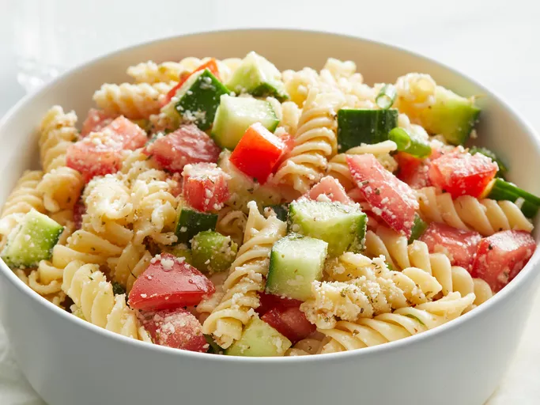

Pasta Salad

Description
A refreshing pasta salad to liven up the week. Create a large amount and portion it out through
the week to save money from those pesky lunch meals.
Ingredients
- 1 box of Pasta
- 1 green pepper
- 1 cucumber
- 200g cherry tomatoes
- 1lb chicken breast
Steps
- Boil some water and put the pasta in until it is al-dente
- Chop up all the vegetables into bite sized pieces
- Boil or fry the chicken over a pan
- Mix all the ingredients together